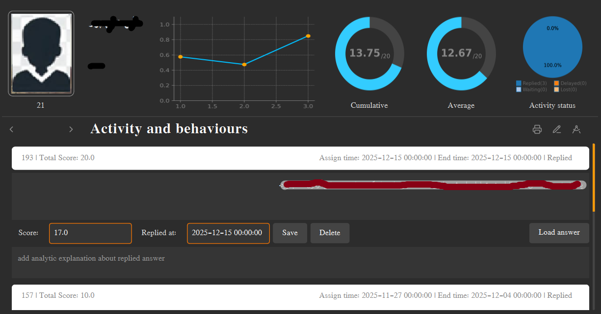
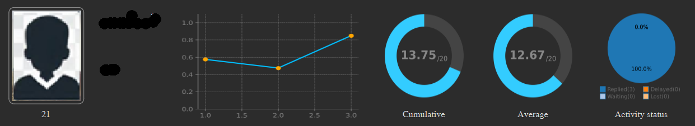
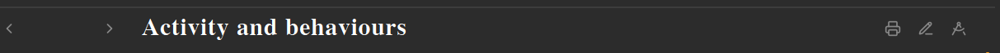
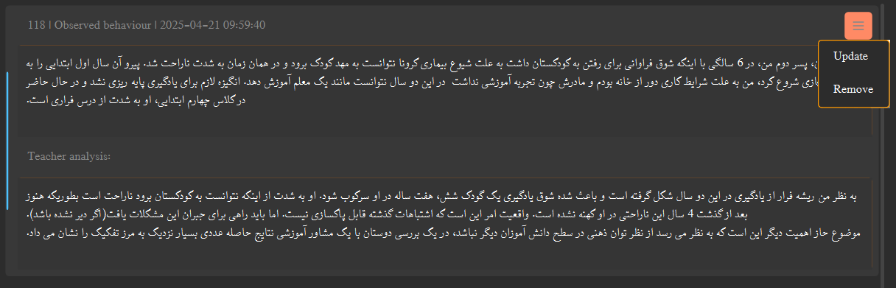
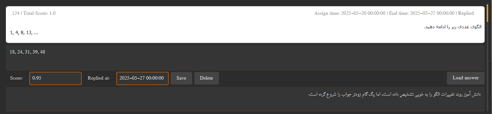

The Student Activity Tracking page provides a comprehensive overview of a student's academic progress, behavioral observations,
and learning activities. This integrated dashboard combines visual analytics with detailed record-keeping, allowing the
educator to monitor student performance, track assignment completion, and maintain behavioral notes in a single, unified
interface. The page features interactive charts, status indicators, and detailed activity logs for complete student
progress monitoring.
This page is available for each student from > Learning Progress option in the
Student List page.
Table of Contents
Interface Overview
Layout Structure
The page is organized into three main sections:
- Header Section: Student information and analytical charts (top section)
- Navigation Bar: Section switcher and action buttons (middle section)
- Content Area: Behavioral observations or learning activities (bottom section)
Content Switching
The page uses a stacked widget system to toggle between two main views:
- Behavioral Observations: Teacher notes and analysis of student behavior
- Learning Activities: Educational assignments, scores, and feedback
Use the left/right arrows to switch between these views.

Student Information Panel with Details
Automatic Updates: All charts and statistics are automatically calculated and updated when you add, edit, or remove observations or activities. The system processes data in real-time to provide accurate analytics.
Student Details
The left side of the header displays key student information:
- Profile Photo: Official student photo (35mm × 45mm format)
- Student ID: Unique identifier with culture-appropriate digit formatting
- Full Name: First and last name in large, prominent text
- Phone Number: Student contact number
- Parent/Guardian: Parent name and contact phone
Analytics
- Line chart: displays the changes of score obtained so far.
- donut chart: Left donut chart displays comulative score.
- donut chart: second donut chart displays avarage of the scores.
- Pi chart: The Pi chart displays current activity status of the student

Student Information Panel with Photo and Contact Details
Analytics Charts
The header section includes four charts that provide visual insights into student performance:
📈 Progress Line Chart
- Purpose: Track score changes over time
- Data: Historical scores from all activities
- X-axis: Activity sequence (1, 2, 3, ...)
- Y-axis: Normalized scores (0-1 scale)
- Size: 283 × 170 pixels
- Tooltip: "Changes in scores obtained so far"
🍩 Cumulative Score Donut
- Purpose: Show overall achievement level
- Calculation: Sum of all scores converted to 20-point scale
- Scale: 0-20 points (standard grading scale)
- Size: 140 × 140 pixels
- Tooltip: "Cumulative score: The sum of all scores obtained so far, converted to a 20-point scale"
🍩 Average Score Donut
- Purpose: Display average performance
- Calculation: Average of scores converted to 20-point scale
- Formula: (Σ scores / count) × 20
- Size: 140 × 140 pixels
- Tooltip: "Average score: The average of the scores obtained so far, converted to a 20-point scale"
🥧 Activity Status Pie Chart
- Purpose: Visualize activity completion status
- Categories: Replied, Waiting, Delayed, Lost
- Labels: Status names with count (e.g., "Replied(5)")
- Columns: 2-column legend layout
- Size: 145 × 140 pixels
- Tooltip: Defined in application context
Real-time Chart Updates: All charts are generated dynamically from the latest data. When you add, edit, or remove activities or observations, the charts automatically recalculate and redraw to reflect current statistics.
Data Ordering: The progress line chart reverses the activity order (newest to oldest) to create a proper time-series visualization. Activities are initially loaded in descending date order (newest first) but are reversed for chart display to show progression from first to most recent activity.
Navigation and Action Controls

Navigation Bar with View Switching and Action Controls
Navigation Bar
The central navigation bar provides view switching and action controls:
- View Title: "Activity and behaviours" indicates current context
- Navigation Arrows: Left for observations, right for activities
- Action Cluster: Three buttons for common operations on right side
Action Buttons
Export Menu (🖨️)
- Current Status: Options disabled in current version
- Planned Features: Export activities or observations
- Future Use: PDF, CSV, or report generation
Add Observation (✏️)
- Function: Opens behavioral observation editor
- Workflow: Two-step entry (observation + analysis)
- Auto-save: Timestamped and added to top of list
Assign Edu-Item (📐)
- Function: Opens Educational Resources View
- Target: Pre-selects current student for assignment
- Integration: Direct link to resource distribution
- Result: New activity appears in Learning Activities view
Context-Sensitive Navigation: The navigation arrows change the entire content area below, allowing you to focus on either behavioral tracking or academic progress monitoring. The current view is not indicated by the arrows themselves, but by the content displayed.
Behavioral Observations
The Behavioral Observations view (accessed with the left arrow button) displays all teacher notes about student behavior:
Observation Structure
- ID & Date: Unique record ID and timestamp
- Observed Behavior: Teacher's factual observations
- Teacher Analysis: Professional interpretation and notes
- Read-only Display: Content displayed in non-editable text areas
- Fixed Height: 100 pixels per text area for consistent layout
Observation Actions
- Update: Edit existing observation content
- Remove: Delete observation from database
- Context Menu: Access actions via right-click
- Confirmation: Warning dialog for deletion operations
Adding New Observations
Click the ✏️ (pencil) button on the navigation bar to add a new behavioral observation:
- Open Dialog: Click pencil icon to open observation editor
- Enter Observation: Describe the observed behavior in first text area
- Add Analysis: Provide professional analysis in second text area
- Save: Click "Save" to store or "Reject" to cancel
- Automatic Update: New observation appears at top of list
Timestamping: All new observations are automatically timestamped with the current date and time when saved. This ensures accurate chronological tracking of behavioral patterns over time.

Behavioral Observations View with Edit and Delete Options
Learning Activities
The Learning Activities view (accessed with the right arrow button) displays all educational assignments and their status:
Activity Information
- Activity ID: Unique identifier for tracking
- Content Description: Educational resource content (HTML)
- Student Answer: HTML content of student response
- Teacher Feedback: HTML feedback provided to student
- Scores: Maximum points and earned points
- Dates: Assignment, deadline, and reply dates
- Status: Visual status indicator (Replied, Waiting, Delayed, Lost)
Activity Management
- Edit Responses: Update student answers or teacher feedback
- Delete Activities: Remove activities with confirmation
- Real-time Updates: Changes immediately affect analytics
- Status Recalculation: Activity status updates based on dates

Learning Activities View with Status Indicators and Scores
Activity Status System
The system automatically categorizes activities into four status types based on dates and responses:
Replied
Waiting
Delayed
Lost
✅ Replied
- Condition: Answer submitted AND reply date ≤ deadline
- Score: Earned points counted toward cumulative total
- Chart Impact: Included in progress line chart
- Color: Green (success)
⏳ Waiting
- Condition: No answer submitted AND current date ≤ deadline
- Score: Not yet counted (pending)
- Chart Impact: Not included in progress chart
- Color: Yellow (pending)
⚠️ Delayed
- Condition: Answer submitted BUT reply date > deadline
- Score: Earned points counted (but marked as late)
- Chart Impact: Included in progress chart
- Color: Red (late submission)
Status: Lost
Condition: No answer submitted AND current date > deadline
Score: Zero points automatically assigned
Chart Impact: Included in progress chart as zero score
Color: Gray (missed opportunity)
Note: Lost activities automatically receive a score of 0, which affects the cumulative and average score calculations.
Status Calculation Logic
Status Determination Algorithm:
1. Check if reply_date is NULL (no answer submitted)
2. If NULL → Check if today ≤ deadline → Waiting
3. If NULL → Check if today > deadline → Lost (score = 0)
4. If NOT NULL → Check if reply_date ≤ deadline → Replied
5. If NOT NULL → Check if reply_date > deadline → Delayed
Score Tracking:
• Replied/Delayed: Add earned_score/max_score to progress array
• Lost: Add 0 to progress array (affects average negatively)
• Waiting: Not added to progress array (doesn't affect statistics yet)
Best Practices for Use:
1. Regular Updates: Add behavioral observations soon after events occur for accurate tracking
2. Status Monitoring: Check the Activity Status pie chart regularly to identify students needing follow-up
3. Progress Analysis: Use the line chart to identify trends in student performance over time
4. Comprehensive Notes: Include both observations (facts) and analysis (interpretation) in behavioral notes
5. Timely Feedback: Update activity status promptly to maintain accurate statistics
6. Chart Interpretation: Remember that "Lost" activities negatively impact average scores with zeros